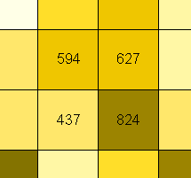
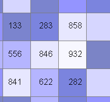
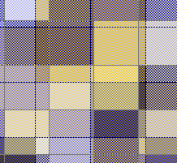
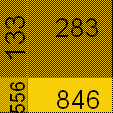
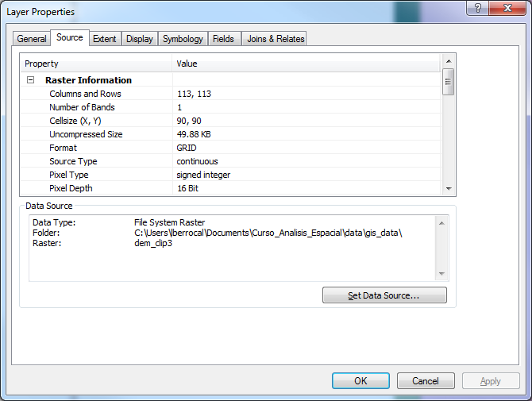
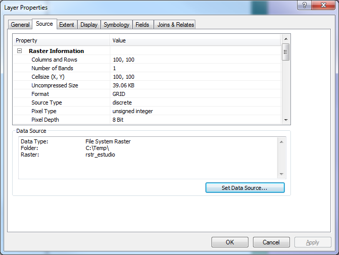
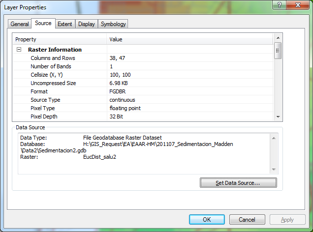

ANÁLISIS ESPACIAL – MODELO RASTER
| Autor: | Ing. Luis Carlos Berrocal |
|---|
Contents
1 Introducción
DENOMINACIÓN DEL CURSO: ANÁLISIS ESPACIAL – MODELO RASTER ABREVIATURA: AER CODIGO: 005 CREDITOS: 4 DURACIÓN: 1 MES PREREQUISITO: AVG-004
1.1 Descripción Del Curso
Los sistemas raster representan la superficie terrestre por medio de rejillas (celdas). El tamaño de la celda establece la escala del mapa, es decir la relación que existe entre una longitud o superficie de la realidad del terreno y su representación en el mapa. La potencialidad de este modelo radica en la posibilidad de modelar la superficie terrestre de una manera eficiente de acuerdo a diversas variables temáticas que van desde las físico naturales hasta las desarrolladas por la acción humana. Los sistemas raster complementan a los sistemas vectoriales
1.2 Objetivos Generales
Establecer las características de un sistema de información raster Seleccionar el tamaño de la celda más apropiado Rasterizar información digital en formato vectorial Definir las principales funciones de análisis Conocer las potencialidades de los modelos digitales del terreno Desarrollar aplicaciones e formatos raster
1.3 Objetivos Específicos
Conocer las características de los SIG-raster Explicar las principales herramientas analíticas que operan los sistemas Aplicar los sistemas raster en funciones de proximidad, distancia y barreras (costos) Aplicar los modelos digitales del terreno en la caracterización topográfica de terreno Aplicar los modelos raster en las funciones hidrológicas y ambientales
1.4 Contenido
Características del formato raster Búsqueda y recuperación de información de una base de datos geográfica raster Reclasificación de datos Superposición de mapas Análisis de vecindad Modelos digitales del terreno Análisis de un modelo digital del terreno Aplicaciones topográficas y ambientales Desarrollo de un proyecto SIG-raster
1.5 Estrategia Metodológica
La metodología del curso está basada en la formación flexible, donde se combina el material didáctico impreso, ejercicios de aplicación, vídeos didácticos y aplicaciones informáticas de propósito didáctico o de entrenamiento, con la asistencia a puntuales jornadas técnicas donde se entra en contacto directo con el equipo docente del curso y con especialistas tanto del mundo universitario como del mundo empresarial. El contacto directo profesor alumno está garantizado a lo largo de todo el curso, no sólo en base a las jornadas técnicas programadas, sino a los medios de comunicación que lo hacen hoy día posible. En este sentido se considera idónea la comunicación vía correo electrónico, que permite al alumno realizar su consulta en cualquier momento y al profesor dar una respuesta meditada en un plazo razonable de tiempo. Pero ello no impide que, cuando se considere necesario, se pueda recurrir a otros medios de comunicación más sofisticados como la videoconferencia o la comunicación directa vía Internet.
En las páginas de acceso Latina Learning Site en Internet los alumnos encuentran tanto contenidos y estructura básica del curso como información complementaria, así como el enlace a un foro de discusión exclusivo para los participantes.
1.6 Recursos Didácticos
Conferencias: Con lecciones documentadas por Internet; adicionalmente se facilitaran referencias bibliográficas a los estudiantes. Actividades Prácticas: Se facilitará el guión a los estudiantes, y un profesor/instructor le asistirá en su desarrollo. Se facilitarán imágenes satelitales, fotografías aéreas y otros datos. Se trabajará de manera continúa con una herramienta bajo la coordinación de un profesor tutor, los estudiantes realizaran trabajos de investigación, prácticas y preparación y desarrollo de proyectos relativos a la asignatura en curso.
1.7 Criterios De Evaluación
2 Exámenes Parciales (15% cada uno) 30% Trabajos grupales 20% Estudios de casos, Investigaciones, Tareas 20% Proyecto Final 30% Total 100%
1.8 Bibliografía Básica
- GIS Modeling in Raster, Michael DeMers, John Wiley & Sons, 2002.
- Exploring spatial analysis in geographic information systems, Yue-Hong Chou, OnWord Press, 1997.
- The Handbook of Geographic Information Science, Nicholas J. Tate, Peter F. Fisher, David J. Martin, Blackwell Publishing, 2008.

3 Modelo Raster
Representan una superficie continua (los vectores presentan datos discreto).
Pueden tener valores enteros o decimales.
La unidad fundamental de análisis es la celda
Regularmente son cuadradas. Aunque algunos argumentan que debe ser hexagonal [1]
| [1] | Rasterdata Structures http://geodata.ethz.ch/geovite/tutorials/L2GeodataStructuresAndDataModels/en/html/unit_u2Raster.html |
4 Ventajas y Desventajas de los Modelos Raster
- Ventajas
- Estructura de datos simple
- Fácil de generar
- Es sencillo realizar análisis
- Desventajas
- Archivos grandes
- Estructura de datos rígida
5 ¿Cómo utilizamos los datos Raster?
- Algebra de mapas
- Propuesta a principios de los ‘80s por el Dr. Dana Tomlin [2].
- Consiste en operaciones matemáticas básicas entre celdas de diferentes rasters.
- Por ejemplo:
- Pendientes fuertes = Pendiente > 15
| [2] | http://www.quantdec.com/SYSEN597/GTKAV/section9/map_algebra.htm |
5.1 Problemas de Representación
Que ocurre cuando se realizan operaciones entre temas Raster que tienen diferentes tamaños de celdas.
   Para realizar la operación es necesario aplicar un proceso previo que se conoce como remuestreo (resampling).
5.1.1 Nearest-neighbor interpolation
The simplest method, simply assigns to each yellow cell the value in the blue cell nearest its center. By not requiring any numerical computations, this method works for categorical data. Because it does not really interpolate values, it generally performs poorly for numerical data.
5.1.2 Bilinear Interpolation
Uses the four blue values surrounding the center of each yellow cell. By translating and rescaling the coordinates, which will not change the interpolation, we may suppose the yellow square is centered at (x, y) and the centers of the surrounding blue cells are located at (0,0), (1,0), (0,1), and (1,1), where they have values Z00, Z10, Z01, and Z11, respectively.
5.1.3 Cubic Convolution
Generalizes bilinear interpolation. The sixteen blue cells surrounding each yellow cell determine the interpolated value.
6 Remuestreo en Spatial Analyst
Spatial Analyst es una extensión de ArcGIS Desktop que se utiliza para análisis raster.
6.1 Cuidados que se deben tener al realizar análisis con Spatial Analyst
6.1.1 Distinción de Rasters de Tipo Entero y Real
Los rasters enteros se muestran como Pixel Type Unsigned Integer o Signed Integer. Los valores reales (con decimales) se muestran con Pixel Type Floating Point.
Entero:
 Reales (decimales)
6.1.2 Operaciones entre Enteros y Reales
6.1.2.1 Multiplicación
Donde:
dem_clip3: continuous, signed integer, 16bits
rastercalc2: continuous, floating point, 32bits
dem_clip3 * Feature_area1 = restarcalc3
Donde:
dem_clip3: continuous, signed integer, 16bits
Feature_area1: continuous, unsigned integer, 8bits
rastercalc3: continuous, signed integer, 32bits
El resultado se ajusta al raster Feature_area1.
dem_clip3 * rastercalc3 = restarcalc4
- Donde:
- dem_clip3: continuous, signed integer, 16bits rastercalc3: continuous, floating point, 32bits rastercalc4: continuous, signed integer, 32bits
Perdida de precisión.
El workaround es:
Float("dem_clip3") * "rastercalc3" = rastercalc5
rastercalc4: continuous, floating point, 32bits
Make sure you only use nearest neighbor interpolation for grids with categorical data. For these grids, interpolation has little or no meaning. For example, if your grid uses a value of 0 for wetlands, 1 for desert, and 2 for urban land cover, then interpolating between wetlands (0) and urban land (2) can easily produce values near 1 (desert), which is ridiculous.
Remember, any image using a color palette is categorical. USGS topographic maps (so-called digital raster graphics, or DRGs) are typically represented this way.
7 NoData
El valor NoData es un valor especial que describe que no hay data en la celda. Las operaciones que tienen como entrada NoData retornan no data. NoData *2 = NoData
8 Bibibliografia
http://docutils.sourceforge.net/docs/user/rst/quickref.html
http://rst2pdf.googlecode.com/svn/trunk/doc/manual.txt
Apéndice A Fuentes de Datos
Smithsonian http://mapserver.stri.si.edu/v2/catalog
Apéndice B Crear un Raster a partir de un Poligono
Apéndice C Clip un Raster con un Polígono
Apéndice D Reproyeccion
Apéndice E Recolectar Datos de Street Maps Capturar la Imagen Georeferenciar
Cargar la imagen
Haga zoom a área de trabajo
Seleccione Fit to Display
9 Como Actualizar el Document de Ayuda Técnica
Abra los archivos con Notepad
9.1 Referencias
- reStructuredText Directives
- http://docutils.sourceforge.net/docs/ref/rst/directives.html
- Quick reStructuredText
- http://docutils.sourceforge.net/docs/user/rst/quickref.html#internal-hyperlink-targets